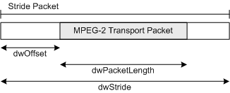

description: The MPEG2_TRANSPORT_STRIDE structure describes the format of MPEG-2 transport stream (TS) packets. ms.assetid: 269d5fba-2dea-4786-93d6-e52b56c8bb53 title: MPEG2_TRANSPORT_STRIDE structure (Bdatypes.h) ms.topic: reference ms.date: 4/26/2023 topic_type:
[The feature associated with this page, DirectShow, is a legacy feature. It has been superseded by MediaPlayer, IMFMediaEngine, and Audio/Video Capture in Media Foundation. Those features have been optimized for Windows 10 and Windows 11. Microsoft strongly recommends that new code use MediaPlayer, IMFMediaEngine and Audio/Video Capture in Media Foundation instead of DirectShow, when possible. Microsoft suggests that existing code that uses the legacy APIs be rewritten to use the new APIs if possible.]
The MPEG2_TRANSPORT_STRIDE structure describes the format of MPEG-2 transport stream (TS) packets. This structure allows for transports streams in which the 188-byte transport packets are not contiguous. For the purpose of this documentation, such packets are referred to as stride packets.
Stride packets are identified by the following media type:
| Label | Value |
|---|---|
| Major Type | MEDIATYPE_Stream |
| Subtype | MEDIASUBTYPE_MPEG2_TRANSPORT_STRIDE |
| Format Type | FORMAT_None |
Â
The format block (pbFormat) is optional. If the format block is included, it must begin with an MPEG2_TRANSPORT_STRIDE structure. This structure defines the layout of the transport packet within the stride packet. If the format block is NULL, the packets are assumed to use a set of default values; see the Remarks section for details.
typedef struct _MPEG2_TRANSPORT_STRIDE {
DWORD dwOffset;
DWORD dwPacketLength;
DWORD dwStride;
} MPEG2_TRANSPORT_STRIDE, *PMPEG2_TRANSPORT_STRIDE;
dwOffset
Specifies the offset, in bytes, from the beginning of the packet to the first byte of the embedded transport packet. The value must range from zero to (dwStride - dwPacketLength), inclusive.
dwPacketLength
Specifies the length of the embedded transport packet, in bytes. For standard MPEG-2 transport packets, the value must be 188 bytes.
dwStride
Specifies the length of the entire stride packet, in bytes. The value must be at least (dwOffset + dwPacketLength).
The following diagram illustrates the relations between the structure members.

Input buffers that contain multiplexed stride packets have some restrictions:
There is no restriction on the number of stride packets per buffer.
If the media type does not contain a format block (pbFormat is NULL), the following default values are used:
| Requirement | Value |
|---|---|
| Header | Bdatypes.h |
Â
Â